17. MVC-Webanwendung in einer 3-Tier-Architektur – Beispiel 3 – Firebird-DBMS
17.1. Die Firebird-Datenbank
In dieser neuen Version speichern wir die Liste der Personen in einer Firebird-Datenbanktabelle. Informationen zur Installation und Verwaltung dieses DBMS finden Sie im Dokument [http://tahe.developpez.com/divers/sql-firebird/]. Die folgenden Screenshots stammen aus IBExpert, einem Verwaltungsprogramm für Interbase- und Firebird-DBMS.
Die Datenbank trägt den Namen [dbpersonnes.gdb]. Sie enthält eine Tabelle namens [PERSONNES]:

Die Tabelle [PERSONNES] enthält die Liste der Personen, die von der Webanwendung verwaltet werden. Sie wurde mit den folgenden SQL-Anweisungen erstellt:
- Zeilen 2–10: Die Struktur der Tabelle [PERSONNES], die zum Speichern von Objekten des Typs [Person] dient, spiegelt die Struktur dieses Objekts wider. Da der Typ „Boolean“ in Firebird nicht existiert, wurde das Feld [MARRIED] (Zeile 8) als Typ [SMALLINT], also als Ganzzahl, deklariert. Sein Wert ist entweder 0 (unverheiratet) oder 1 (verheiratet).
- Zeilen 13–16: Integritätsbeschränkungen, die denen des Datenvalidators [ValidatePerson] entsprechen.
- Zeile 19: Das Feld ID ist der Primärschlüssel der Tabelle [PERSONNES]
Die Tabelle [PERSONNES] könnte folgenden Inhalt haben:

Die Datenbank [dbpersonnes.gdb] enthält neben der Tabelle [PERSONNES] ein Objekt namens [GEN_PERSONNES_ID], das als Generator bezeichnet wird. Dieser Generator erzeugt fortlaufende Ganzzahlen, die wir verwenden, um dem Primärschlüssel [ID] der Klasse [PERSONNES] einen Wert zuzuweisen. Sehen wir uns ein Beispiel an, um zu veranschaulichen, wie das funktioniert:
 |
 |
Wir können sehen, dass sich der Wert des Generators [GEN_PERSONNES_ID] geändert hat (doppelklicken Sie darauf und drücken Sie F5, um die Seite zu aktualisieren):
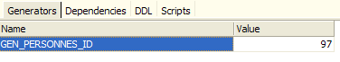 |
gibt daher den folgenden Wert für den Generator [GEN_PERSONNES_ID] zurück. GEN_ID ist eine interne Firebird-Funktion, und [RDB$DATABASE] ist eine Systemtabelle in diesem DBMS.
17.2. Das Eclipse-Projekt für die [dao]- und [service]-Schichten
Zur Entwicklung der [dao]- und [service]-Schichten unserer Datenbankanwendung verwenden wir das folgende Eclipse-Projekt [mvc-personnes-03]:

Das Projekt ist ein einfaches Java-Projekt, kein Tomcat-Webprojekt. Denken Sie daran, dass Version 2 unserer Anwendung die [web]-Schicht aus Version 1 verwenden wird. Diese Schicht muss daher nicht neu geschrieben werden.
Ordner [src]
Dieser Ordner enthält den Quellcode für die [dao]- und [service]-Schichten:

Er enthält verschiedene Pakete:
- [istia.st.mvc.personnes.dao]: enthält die [dao]-Schicht
- [istia.st.mvc.personnes.entites]: enthält die Klasse [Person]
- [istia.st.mvc.people.service]: enthält die [service]-Klasse
- [istia.st.mvc.personnes.tests]: enthält die JUnit-Tests für die [dao]- und [service]-Schichten
sowie Konfigurationsdateien, die sich im ClassPath der Anwendung befinden müssen.
Ordner [database]
Dieser Ordner enthält die Firebird-Datenbank für Benutzer:

- [dbpersonnes.gdb] ist die Datenbank.
- [dbpersonnes.sql] ist das SQL-Skript zum Erstellen der Datenbank:
Ordner [lib]
Dieser Ordner enthält die von der Anwendung benötigten Dateien:
 |
Beachten Sie den JDBC-Treiber [firebirdsql-full.jar] für das Firebird-DBMS sowie eine Reihe von [spring-*.jar]-Dateien. Wir hätten auch die einzelne [spring.jar]-Datei aus dem [dist]-Ordner der Distribution verwenden können, die alle Spring-Klassen enthält. Wir können auch nur die für das Projekt erforderlichen Archive verwenden. Genau das haben wir hier getan, geleitet von den von Eclipse gemeldeten Fehlern wegen fehlender Klassen und den Namen der Teilarchive von Spring. Alle diese Archive aus dem Ordner [lib] wurden in den Klassenpfad des Projekts aufgenommen.
Ordner [dist]
Dieser Ordner enthält die Archive, die bei der Kompilierung der Klassen der Anwendung entstehen:

- [personnes-dao.jar]: Archiv der [dao]-Schicht
- [personnes-service.jar]: Archiv der [service]-Schicht
17.3. Die [dao]-Schicht
17.3.1. Komponenten der [dao]-Schicht
Die [dao]-Schicht besteht aus den folgenden Klassen und Schnittstellen:

- [IDao] ist die von der [dao]-Schicht bereitgestellte Schnittstelle
- [DaoImplCommon] ist eine Implementierung dieser Schnittstelle, bei der die Gruppe von Personen in einer Datenbanktabelle gespeichert wird. [DaoImplCommon] fasst DBMS-unabhängige Funktionen zusammen.
- [DaoImplFirebird] ist eine von [DaoImplCommon] abgeleitete Klasse zur spezifischen Verwaltung einer Firebird-Datenbank.
- [DaoException] ist der Typ der unbehandelten Ausnahmen, die von der [dao]-Schicht ausgelöst werden. Diese Klasse stammt aus Version 1.
Die [IDao]-Schnittstelle sieht wie folgt aus:
- Die Schnittstelle verfügt über dieselben vier Methoden wie in der vorherigen Version.
Die Klasse [DaoImplCommon], die diese Schnittstelle implementiert, sieht wie folgt aus:
- Zeilen 8–9: Die Klasse [DaoImpl] implementiert die Schnittstelle [IDao] und damit die vier Methoden [getAll, getOne, saveOne, deleteOne].
- Zeilen 27–37: Die Methode [saveOne] verwendet zwei interne Methoden, [insertPerson] und [updatePerson], je nachdem, ob eine Person hinzugefügt oder geändert werden muss.
- Zeile 50: Die private Methode [check] ist dieselbe wie in der vorherigen Version. Wir werden hier nicht noch einmal darauf eingehen.
- Zeile 8: Um die Schnittstelle [IDao] zu implementieren, erweitert die Klasse [DaoImpl] die Spring-Klasse [SqlMapClientDaoSupport].
17.3.2. Die Datenzugriffsschicht [iBATIS]
Die Spring-Klasse [SqlMapClientDaoSupport] verwendet ein Framework eines Drittanbieters [Ibatis SqlMap], das unter der URL [http://ibatis.apache.org/] verfügbar ist:
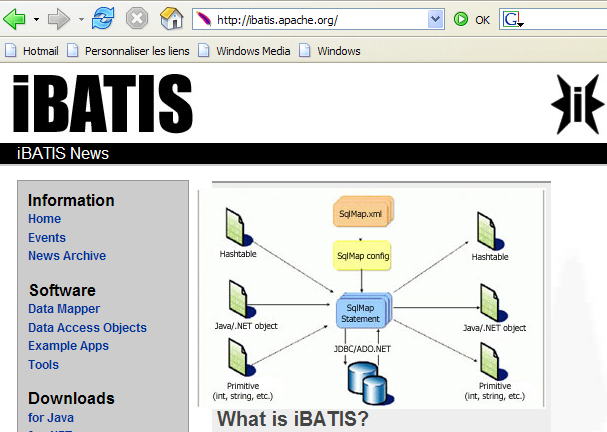
[iBATIS] ist ein Apache-Projekt, das die Erstellung datenbankgestützter [DAO]-Schichten erleichtert. Mit [iBATIS] sieht die Architektur der Datenzugriffsschicht wie folgt aus:
 |
[iBATIS] befindet sich zwischen der [DAO]-Schicht der Anwendung und dem JDBC-Treiber der Datenbank. Es gibt Alternativen zu [iBATIS], wie beispielsweise [Hibernate]:

 |
Für die Verwendung des [iBATIS]-Frameworks sind zwei Archive [ibatis-common, ibatis-sqlmap] erforderlich, die beide im [lib]-Ordner des Projekts abgelegt wurden:
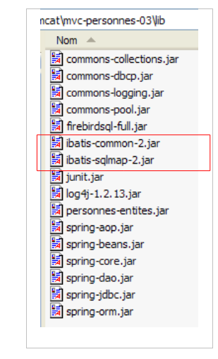 |
Die Klasse [SqlMapClientDaoSupport] kapselt den generischen Teil der Verwendung des [iBATIS]-Frameworks, d. h. die Codeabschnitte, die in allen [DAO]-Schichten zu finden sind, die das [iBATIS]-Tool nutzen. Um den nicht-generischen Teil des Codes zu schreiben – also den Code, der spezifisch für die [DAO]-Schicht ist, die wir gerade erstellen – leiten Sie einfach die Klasse [SqlMapClientDaoSupport] ab. Genau das tun wir hier.
Die Klasse [SqlMapClientDaoSupport] ist wie folgt definiert:
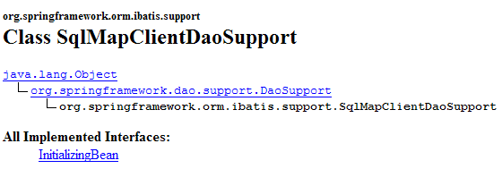
Unter den Methoden dieser Klasse ermöglicht uns eine davon, den [iBATIS]-Client zu konfigurieren, mit dem wir die Datenbank bedienen werden:

Das Objekt [SqlMapClient sqlMapClient] ist das [iBATIS]-Objekt, das für den Zugriff auf eine Datenbank verwendet wird. Es implementiert für sich genommen die [iBATIS]-Schicht unserer Architektur:
 |
Eine typische Abfolge von Aktionen mit diesem Objekt sieht wie folgt aus:
- eine Verbindung aus einem Verbindungspool anfordern
- eine Transaktion öffnen
- eine Reihe von SQL-Anweisungen ausführen, die in einer Konfigurationsdatei gespeichert sind
- die Transaktion schließen
- die Verbindung an den Pool zurückgeben
Wenn unsere [DaoImplCommon]-Implementierung direkt mit [iBATIS] arbeiten würde, müsste sie diese Abfolge wiederholt ausführen. Nur Vorgang 3 ist spezifisch für eine [dao]-Schicht; die anderen Vorgänge sind generisch. Die Spring-Klasse [SqlMapClientDaoSupport] übernimmt die Operationen 1, 2, 4 und 5 selbst und delegiert Operation 3 an ihre abgeleitete Klasse, in diesem Fall die Klasse [DaoImplCommon].
Um zu funktionieren, benötigt die Klasse [SqlMapClientDaoSupport] eine Referenz auf das iBATIS-Objekt [SqlMapClient sqlMapClient], das die Kommunikation mit der Datenbank übernimmt. Dieses Objekt benötigt zwei Dinge, um zu funktionieren:
- ein [DataSource]-Objekt, das mit der Datenbank verbunden ist, von der es Verbindungen anfordert
- eine (oder mehrere) Konfigurationsdateien, in denen die auszuführenden SQL-Anweisungen extern gespeichert sind. Diese befinden sich nämlich nicht im Java-Code. Sie werden durch einen Code in einer Konfigurationsdatei identifiziert, und das Objekt [SqlMapClient sqlMapClient] verwendet diesen Code, um eine bestimmte SQL-Anweisung auszuführen.
Eine vorläufige Konfiguration unserer [dao]-Schicht, die die oben beschriebene Architektur widerspiegeln würde, sähe wie folgt aus:
<!-- the [dao] layer access classes -->
<bean id="dao" class="istia.st.mvc.personnes.dao.DaoImplCommon">
<property name="sqlMapClient">
<ref local="sqlMapClient"/>
</property>
</bean>
Hier wird die Eigenschaft [sqlMapClient] (Zeile 3) der Klasse [DaoImplCommon] (Zeile 2) initialisiert. Die Initialisierung erfolgt durch die Methode [setSqlMapClient] der Klasse [DaoImpl]. Diese Klasse verfügt nicht über diese Methode. Sie ist in ihrer übergeordneten Klasse [SqlMapClientDaoSupport] enthalten. Es ist also tatsächlich diese Klasse, die hier initialisiert wird.
Nun verweisen wir in Zeile 4 auf ein Objekt namens „sqlMapClient“, das noch erstellt werden muss. Wie bereits erwähnt, ist dieses Objekt vom Typ [SqlMapClient], einem [iBATIS]-Typ:

[SqlMapClient] ist eine Schnittstelle. Spring stellt die Klasse [SqlMapClientFactoryBean] bereit, um ein Objekt zu erhalten, das diese Schnittstelle implementiert:

Erinnern Sie sich daran, dass wir ein Objekt instanziieren möchten, das die Schnittstelle [SqlMapClient] implementiert. Dies scheint bei der Klasse [SqlMapClientFactoryBean] nicht der Fall zu sein. Diese Klasse implementiert die Schnittstelle [FactoryBean] (siehe oben). Sie verfügt über die folgende Methode [getObject()]:

Wenn Spring um eine Instanz eines Objekts gebeten wird, das die [FactoryBean]-Schnittstelle implementiert, dann:
- eine Instanz [I] der Klasse – in diesem Fall eine Instanz vom Typ [SqlMapClientFactoryBean].
- gibt das Ergebnis der Methode [I].getObject() an die aufrufende Methode zurück – die Methode [SqlMapClientFactoryBean].getObject() gibt ein Objekt zurück, das die Schnittstelle [SqlMapClient] implementiert.
Um ein Objekt zurückzugeben, das die Schnittstelle [SqlMapClient] implementiert, benötigt die Klasse [SqlMapClientFactoryBean] zwei für dieses Objekt erforderliche Informationen:
- ein [DataSource]-Objekt, das mit der Datenbank verbunden ist, von der es Verbindungen anfordert
- eine (oder mehrere) Konfigurationsdateien, in denen die auszuführenden SQL-Anweisungen gespeichert sind
Die Klasse [SqlMapClientFactoryBean] verfügt über Set-Methoden zur Initialisierung dieser beiden Eigenschaften:

Wir machen Fortschritte... Unsere Konfigurationsdatei nimmt Gestalt an und sieht nun wie folgt aus:
<!-- SqlMapCllient -->
<bean id="sqlMapClient"
class="org.springframework.orm.ibatis.SqlMapClientFactoryBean">
<property name="dataSource">
<ref local="dataSource"/>
</property>
<property name="configLocation">
<value>classpath:sql-map-config-firebird.xml</value>
</property>
</bean>
<!-- the [dao] layer access classes -->
<bean id="dao" class="istia.st.mvc.personnes.dao.DaoImplCommon">
<property name="sqlMapClient">
<ref local="sqlMapClient"/>
</property>
</bean>
- Zeilen 2–3: Die Bean „sqlMapClient“ ist vom Typ [SqlMapClientFactoryBean]. Aus dem zuvor Erläuterten wissen wir, dass wir, wenn wir Spring um eine Instanz dieser Bean bitten, ein Objekt erhalten, das die iBATIS-Schnittstelle [SqlMapClient] implementiert. Dieses Objekt wird daher in Zeile 14 abgerufen.
- Zeilen 7–9: Wir geben an, dass die vom iBATIS-Objekt [SqlMapClient] benötigte Konfigurationsdatei den Namen „sql-map-config-firebird.xml“ trägt und sich im ClassPath der Anwendung befinden muss. Hier wird die Methode [SqlMapClientFactoryBean].setConfigLocation verwendet.
- Zeilen 4–6: Wir initialisieren die Eigenschaft [dataSource] von [SqlMapClientFactoryBean] mithilfe der Methode [setDataSource].
Zeile 5: Wir verweisen auf eine Bean namens „dataSource“, die noch erstellt werden muss. Wenn wir uns den von der Methode [setDataSource] von [SqlMapClientFactoryBean] erwarteten Parameter ansehen, stellen wir fest, dass er vom Typ [DataSource] ist:

Wieder einmal haben wir es mit einer Schnittstelle zu tun, für die wir eine Implementierungsklasse finden müssen. Die Aufgabe einer solchen Klasse besteht darin, einer Anwendung effizient Verbindungen zu einer bestimmten Datenbank bereitzustellen. Ein DBMS kann nicht eine große Anzahl von Verbindungen gleichzeitig offen halten. Um die Anzahl der offenen Verbindungen zu einem bestimmten Zeitpunkt zu reduzieren, müssen wir bei jeder Interaktion mit der Datenbank:
- eine Verbindung öffnen
- eine Transaktion starten
- SQL-Anweisungen ausführen
- die Transaktion schließen
- die Verbindung schließen
Das wiederholte Öffnen und Schließen von Verbindungen ist zeitaufwendig. Um diese beiden Probleme anzugehen – nämlich sowohl die Anzahl der gleichzeitig offenen Verbindungen zu begrenzen als auch den Aufwand für das Öffnen und Schließen zu reduzieren – gehen Klassen, die die [DataSource]-Schnittstelle implementieren, häufig wie folgt vor:
- Bei der Instanziierung öffnen sie N Verbindungen zur Zieldatenbank. N hat in der Regel einen Standardwert und kann meist in einer Konfigurationsdatei definiert werden. Diese N Verbindungen bleiben jederzeit offen und bilden einen Pool von Verbindungen, der den Threads der Anwendung zur Verfügung steht.
- Wenn ein Anwendungs-Thread eine Verbindung anfordert, stellt das [DataSource]-Objekt ihm eine der beim Start geöffneten N-Verbindungen zur Verfügung, sofern noch welche verfügbar sind. Wenn die Anwendung die Verbindung schließt, wird sie nicht tatsächlich geschlossen, sondern lediglich in den Pool der verfügbaren Verbindungen zurückgeführt.
Es gibt verschiedene frei verfügbare Implementierungen der [DataSource]-Schnittstelle. Hier verwenden wir die [commons DBCP]-Implementierung, die unter der URL [http://jakarta.apache.org/commons/dbcp/] verfügbar ist:

Die Verwendung des [commons DBCP]-Tools erfordert zwei Archive [commons-dbcp, commons-pool], die beide im [lib]-Ordner des Projekts abgelegt wurden:
 |
Die Klasse [BasicDataSource] aus [commons DBCP] stellt die von uns benötigte [DataSource]-Implementierung bereit:
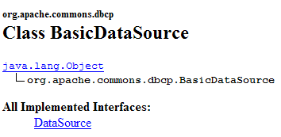
Diese Klasse stellt uns einen Verbindungspool für den Zugriff auf die Firebird-Datenbank unserer Anwendung [dbpersonnes.gdb] zur Verfügung. Dazu müssen wir ihr die Informationen bereitstellen, die sie benötigt, um die Verbindungen im Pool herzustellen:
- den Namen des zu verwendenden JDBC-Treibers – initialisiert mit [setDriverClassName]
- die URL der zu verwendenden Datenbank – initialisiert mit [setUrl]
- den Benutzernamen des Benutzers, dem die Verbindung gehört – initialisiert mit [setUsername] (nicht setUserName, wie man vielleicht erwarten würde)
- dessen Passwort – initialisiert mit [setPassword]
Die Konfigurationsdatei für unsere [dao]-Schicht könnte wie folgt aussehen:
<?xml version="1.0" encoding="ISO_8859-1"?>
<!DOCTYPE beans SYSTEM "http://www.springframework.org/dtd/spring-beans.dtd">
<beans>
<!-- data source DBCP -->
<bean id="dataSource" class="org.apache.commons.dbcp.BasicDataSource"
destroy-method="close">
<property name="driverClassName">
<value>org.firebirdsql.jdbc.FBDriver</value>
</property>
<!-- warning: do not leave spaces between the two <value> tags in the url -->
<property name="url">
<value>jdbc:firebirdsql:localhost/3050:C:/data/2005-2006/eclipse/dvp-eclipse-tomcat/mvc-personnes-03/database/dbpersonnes.gdb</value>
</property>
<property name="username">
<value>sysdba</value>
</property>
<property name="password">
<value>masterkey</value>
</property>
</bean>
<!-- SqlMapCllient -->
<bean id="sqlMapClient"
class="org.springframework.orm.ibatis.SqlMapClientFactoryBean">
<property name="dataSource">
<ref local="dataSource"/>
</property>
<property name="configLocation">
<value>classpath:sql-map-config-firebird.xml</value>
</property>
</bean>
<!-- the [dao] layer access classes -->
<bean id="dao" class="istia.st.mvc.personnes.dao.DaoImplCommon">
<property name="sqlMapClient">
<ref local="sqlMapClient"/>
</property>
</bean>
</beans>
- Zeilen 7–9: Der Name des JDBC-Treibers für das Firebird-DBMS
- Zeilen 11–13: Die URL der Firebird-Datenbank [dbpersonnes.gdb]. Achten Sie genau darauf, wie diese geschrieben ist. Zwischen den <value>-Tags und der URL dürfen keine Leerzeichen stehen.
- Zeilen 14–16: der Verbindungseigentümer – hier [sysdba], der Standardadministrator für Firebird-Distributionen
- Zeilen 17–19: das Passwort [masterkey] – ebenfalls der Standardwert
Wir haben bereits große Fortschritte gemacht, aber es gibt noch einige Konfigurationspunkte zu klären: Zeile 28 verweist auf die Datei [sql-map-config-firebird.xml], die den iBATIS [SqlMapClient] konfigurieren muss. Bevor wir uns den Inhalt ansehen, zeigen wir zunächst den Speicherort dieser Konfigurationsdateien in unserem Eclipse-Projekt:

- [spring-config-test-dao-firebird.xml] ist die Konfigurationsdatei für die [dao]-Schicht, die wir gerade untersucht haben
- [sql-map-config-firebird.xml] wird von [spring-config-test-dao-firebird.xml] referenziert. Wir werden sie uns ansehen.
- [personnes-firebird.xml] wird von [sql-map-config-firebird.xml] referenziert. Wir werden sie untersuchen.
Die drei oben genannten Dateien befinden sich im Ordner [src]. In Eclipse bedeutet dies, dass sie zur Laufzeit im Ordner [bin] des Projekts vorhanden sein werden (oben nicht dargestellt). Dieser Ordner ist Teil des ClassPath der Anwendung. Letztendlich werden die drei oben genannten Dateien daher im ClassPath der Anwendung vorhanden sein. Dies ist notwendig.
Die Datei [sql-map-config-firebird.xml] sieht wie folgt aus:
<?xml version="1.0" encoding="UTF-8" ?>
<!DOCTYPE sqlMapConfig
PUBLIC "-//iBATIS.com//DTD SQL Map Config 2.0//EN"
"http://www.ibatis.com/dtd/sql-map-config-2.dtd">
<sqlMapConfig>
<sqlMap resource="personnes-firebird.xml"/>
</sqlMapConfig>
- Diese Datei muss <sqlMapConfig> als Stamm-Tag enthalten (Zeilen 6 und 8)
- Zeile 7: Mit dem <sqlMap>-Tag werden die Dateien angegeben, die die auszuführenden SQL-Anweisungen enthalten. Häufig – wenn auch nicht zwingend – gibt es eine Datei pro Tabelle. Dadurch können SQL-Anweisungen für eine bestimmte Tabelle in einer einzigen Datei zusammengefasst werden. Allerdings sind SQL-Anweisungen, die mehrere Tabellen betreffen, weit verbreitet. In solchen Fällen gilt die vorstehende Struktur nicht. Es ist lediglich wichtig zu beachten, dass alle durch die <sqlMap>-Tags bezeichneten Dateien zusammengeführt werden. Diese Dateien werden im ClassPath der Anwendung gesucht.
Die Datei [personnes-firebird.xml] beschreibt die SQL-Anweisungen, die für die Tabelle [PERSONNES] in der Firebird-Datenbank [dbpersonnes.gdb] ausgeführt werden. Ihr Inhalt lautet wie folgt:
<?xml version="1.0" encoding="UTF-8" ?>
<!DOCTYPE sqlMap
PUBLIC "-//iBATIS.com//DTD SQL Map 2.0//EN"
"http://www.ibatis.com/dtd/sql-map-2.dtd">
<sqlMap>
<!-- alias class [Person] -->
<typeAlias alias="Personne.classe"
type="istia.st.mvc.personnes.entites.Personne"/>
<!-- mapping table [PERSONNES] - object [Person] -->
<resultMap id="Personne.map"
class="Personne.classe">
<result property="id" column="ID" />
<result property="version" column="VERSION" />
<result property="nom" column="NOM"/>
<result property="prenom" column="PRENOM"/>
<result property="dateNaissance" column="DATENAISSANCE"/>
<result property="marie" column="MARIE"/>
<result property="nbEnfants" column="NBENFANTS"/>
</resultMap>
<!-- list of all persons -->
<select id="Personne.getAll" resultMap="Personne.map" > select ID, VERSION, NOM,
PRENOM, DATENAISSANCE, MARIE, NBENFANTS FROM PERSONNES</select>
<!-- get a specific person -->
<select id="Personne.getOne" resultMap="Personne.map" >select ID, VERSION, NOM,
PRENOM, DATENAISSANCE, MARIE, NBENFANTS FROM PERSONNES WHERE ID=#value#</select>
<!-- add a person -->
<insert id="Personne.insertOne" parameterClass="Personne.classe">
<selectKey keyProperty="id">
SELECT GEN_ID(GEN_PERSONNES_ID,1) as "value" FROM RDB$$DATABASE
</selectKey>
insert into
PERSONNES(ID, VERSION, NOM, PRENOM, DATENAISSANCE, MARIE, NBENFANTS)
VALUES(#id#, #version#, #nom#, #prenom#, #dateNaissance#, #marie#,
#nbEnfants#) </insert>
<!-- update a person -->
<update id="Personne.updateOne" parameterClass="Personne.classe"> update
PERSONNES set VERSION=#version#+1, NOM=#nom#, PRENOM=#prenom#, DATENAISSANCE=#dateNaissance#,
MARIE=#marie#, NBENFANTS=#nbEnfants# WHERE ID=#id# and
VERSION=#version#</update>
<!-- delete a person -->
<delete id="Personne.deleteOne" parameterClass="int"> delete FROM PERSONNES WHERE
ID=#value# </delete>
</sqlMap>
- Die Datei muss <sqlMap> als Root-Tag enthalten (Zeilen 7 und 45)
- Zeilen 9–10: Um das Schreiben der Datei zu vereinfachen, vergeben wir den Alias [Person.class] für die Klasse [istia.st.springmvc.personnes.entites.Person].
- Zeilen 12–21: Definieren die Zuordnungen zwischen den Spalten in der Tabelle [PERSONNES] und den Feldern im Objekt [Personne].
- Zeilen 23–24: Die SQL-Anweisung [SELECT] zum Abrufen aller Personen aus der Tabelle [PERSONNES]
- Zeilen 26–27: Die SQL-Anweisung [SELECT] zum Abrufen einer bestimmten Person aus der Tabelle [PERSONNES]
- Zeilen 29–36: Die SQL-Anweisung [insert] zum Einfügen einer Person in die Tabelle [PERSONS]
- Zeilen 38–41: Die SQL-Anweisung [UPDATE] zum Aktualisieren einer Person in der Tabelle [PERSONS]
- Zeilen 42–44: Der SQL-Befehl [delete], der eine Person aus der Tabelle [PERSONS] löscht
Die Rolle und Bedeutung des Inhalts der Datei [people-firebird.xml] wird anhand einer Untersuchung der Klasse [DaoImplCommon] erläutert, die die [dao]-Schicht implementiert.
17.3.3. Die Klasse [DaoImplCommon]
Werfen wir noch einmal einen Blick auf die Datenzugriffsarchitektur:
 |
Die Klasse [DaoImplCommon] sieht wie folgt aus:
Wir werden die Methoden nacheinander betrachten.
getAll
Diese Methode ruft alle Personen in der Liste ab. Der Code lautet wie folgt:
Zunächst sei daran erinnert, dass die Klasse [DaoImplCommon] von der Spring-Klasse [SqlMapClientDaoSupport] abgeleitet ist. Diese Klasse stellt die Methode [getSqlMapClientTemplate()] bereit, die in Zeile 3 oben verwendet wird. Diese Methode hat folgende Signatur:

Der Typ [SqlMapClientTemplate] kapseln das [SqlMapClient]-Objekt aus der [iBATIS]-Schicht. Über dieses Objekt greifen wir auf die Datenbank zu. Der [iBATIS]-Typ SqlMapClient könnte direkt verwendet werden, da die Klasse [SqlMapClientDaoSupport] Zugriff darauf hat:
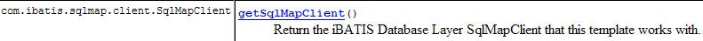
Der Nachteil der [iBATIS]-Klasse SqlMapClient besteht darin, dass sie [SQLException]-Ausnahmen auslöst, einen kontrollierten Ausnahmetyp, d. h. einen, der durch einen try/catch-Block abgefangen oder in der Signatur der Methoden, die ihn auslösen, deklariert werden muss. Wir sollten jedoch bedenken, dass die [dao]-Schicht eine [IDao]-Schnittstelle implementiert, deren Methoden keine Ausnahmen in ihren Signaturen enthalten. Die Methoden der Klassen, die die [IDao]-Schnittstelle implementieren, dürfen daher ebenfalls keine Ausnahmen in ihren Signaturen enthalten. Wir müssen daher jede von der [iBATIS]-Schicht ausgelöste [SQLException] abfangen und in eine ungeprüfte Ausnahme kapseln. Der Typ [DaoException] aus unserem Projekt wäre für diese Kapselung geeignet.
Anstatt diese Ausnahmen selbst zu behandeln, werden wir sie dem Spring-Typ [SqlMapClientTemplate] anvertrauen, der das [SqlMapClient]-Objekt aus der [iBATIS]-Schicht kapseln. Tatsächlich wurde [SqlMapClientTemplate] dafür entwickelt, von der [SqlMapClient]-Schicht ausgelöste [SQLException]-Ausnahmen abzufangen und sie in einen nicht behandelten [ DataAccessException]-Typ zu kapseln. Dieses Verhalten kommt uns entgegen. Wir müssen lediglich beachten, dass die [dao]-Schicht nun zwei Arten von nicht behandelten Ausnahmen auslösen kann:
- unseren benutzerdefinierten Typ [DaoException]
- den Spring-Typ [DataAccessException]
Der Typ [SqlMapClientTemplate] ist wie folgt definiert:

Er implementiert die folgende [SqlMapClientOperations]-Schnittstelle:

Diese Schnittstelle definiert Methoden, die den Inhalt der Datei [people-firebird.xml] nutzen können:
[queryForList]
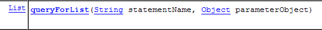
Mit dieser Methode können Sie eine [SELECT]-Anweisung ausführen und das Ergebnis als Liste von Objekten abrufen:
- [statementName]: die Kennung (ID) der [SELECT]-Anweisung in der Konfigurationsdatei
- [parameterObject]: das „parameter“-Objekt für eine parametrisierte [SELECT]. Das „parameter“-Objekt kann zwei Formen annehmen:
- ein Objekt, das dem JavaBean-Standard entspricht: Die Parameter der [SELECT]-Anweisung sind dann die Namen der Felder des JavaBeans. Bei der Ausführung der [SELECT]-Anweisung werden sie durch die Werte dieser Felder ersetzt.
- einem Wörterbuch: Die Parameter der [select]-Anweisung sind dann die Schlüssel des Wörterbuchs. Bei der Ausführung der [select]-Anweisung werden diese durch die ihnen zugeordneten Werte im Wörterbuch ersetzt.
- Wenn die [SELECT]-Anweisung keine Zeilen zurückgibt, ist das [List]-Ergebnis ein leeres Objekt, aber nicht null (zu überprüfen).
[queryForObject]

Diese Methode ist konzeptionell identisch mit der vorherigen, gibt jedoch nur ein einzelnes Objekt zurück. Wenn die [SELECT]-Anweisung keine Zeilen zurückgibt, ist das Ergebnis der Null-Zeiger.
[insert]

Diese Methode führt eine SQL-[insert]-Anweisung aus, die durch den zweiten Parameter konfiguriert wird. Das zurückgegebene Objekt ist der Primärschlüssel der Zeile, die eingefügt wurde. Es besteht keine Verpflichtung, dieses Ergebnis zu verwenden.
[update]

Diese Methode führt eine durch den zweiten Parameter konfigurierte SQL-[update]-Anweisung aus. Das Ergebnis ist die Anzahl der durch die SQL-[update]-Anweisung geänderten Zeilen.
[delete]

Diese Methode führt eine SQL-[delete]-Anweisung aus, die durch den zweiten Parameter konfiguriert wird. Das Ergebnis ist die Anzahl der Zeilen, die durch die SQL-[delete]-Anweisung gelöscht wurden.
Kehren wir zur [getAll]-Methode der Klasse [DaoImplCommon] zurück:
- Zeile 4: Die [select]-Anweisung mit dem Namen „Person.getAll“ wird ausgeführt. Sie hat keine Parameter, daher ist das „parameter“-Objekt null.
In [people-firebird.xml] lautet die [select]-Anweisung mit dem Namen „Person.getAll“ wie folgt:
<?xml version="1.0" encoding="UTF-8" ?>
<!DOCTYPE sqlMap
PUBLIC "-//iBATIS.com//DTD SQL Map 2.0//EN"
"http://www.ibatis.com/dtd/sql-map-2.dtd">
<sqlMap>
<!-- alias class [Person] -->
<typeAlias alias="Personne.classe"
type="istia.st.mvc.personnes.entites.Personne"/>
<!-- mapping table [PERSONNES] - object [Person] -->
<resultMap id="Personne.map"
class="Personne.classe">
<result property="id" column="ID" />
<result property="version" column="VERSION" />
<result property="nom" column="NOM"/>
<result property="prenom" column="PRENOM"/>
<result property="dateNaissance" column="DATENAISSANCE"/>
<result property="marie" column="MARIE"/>
<result property="nbEnfants" column="NBENFANTS"/>
</resultMap>
<!-- list of all persons -->
<select id="Personne.getAll" resultMap="Personne.map" > select ID, VERSION, NOM,
PRENOM, DATENAISSANCE, MARIE, NBENFANTS FROM PERSONNES</select>
...
</sqlMap>
- Zeile 23: Die SQL-Anweisung „Person.getAll“ ist unparametrisiert (keine Parameter im Abfragetext).
- Zeile 3 der Methode [getAll] ruft die Ausführung der [select]-Abfrage mit dem Namen „Personne.getAll“ auf. Diese Abfrage wird ausgeführt. [iBATIS] stützt sich auf JDBC. Wir wissen daher, dass das Ergebnis der Abfrage als [ResultSet]-Objekt zurückgegeben wird. Zeile 23: Das [resultMap]-Attribut des <select>-Tags teilt [iBATIS] mit, welche „resultMap“ verwendet werden soll, um jede Zeile des erhaltenen [ResultSet] in ein Objekt zu konvertieren. Es ist die in den Zeilen 12–21 definierte „resultMap“ [Person.map], die festlegt, wie eine Zeile aus der Tabelle [PERSONNES] einem Objekt vom Typ [Person] zugeordnet wird. [iBATIS] verwendet diese Zuordnungen, um basierend auf den Zeilen im [ResultSet] eine Liste von [Person]-Objekten zurückzugeben.
- Zeile 3 der Methode [getAll] gibt dann eine Sammlung von [Person]-Objekten zurück
- Die Methode [queryForList] kann eine Spring [DataAccessException] auslösen. Wir lassen diese weitergeben.
Die anderen Methoden der Klasse [AbstractDaoImpl] werden wir nur kurz erläutern, da die Grundlagen der Verwendung von [iBATIS] bereits in der Erläuterung der Methode [getAll] behandelt wurden.
getOne
Diese Methode ruft eine Person ab, die durch ihre [id] identifiziert wird. Der Code lautet wie folgt:
- Zeile 4: Fordert die Ausführung der [select]-Anweisung mit dem Namen „Person.getOne“ an. Dies entspricht folgendem Eintrag in der Datei [people-firebird.xml]:
<!-- get a specific person -->
<select id="Personne.getOne" resultMap="Personne.map" parameterClass="int">
select ID, VERSION, NOM, PRENOM, DATENAISSANCE, MARIE, NBENFANTS FROM
PERSONNES WHERE ID=#value#</select>
Die SQL-Abfrage wird durch den Parameter #value# konfiguriert (Zeile 4). Das Attribut #value# gibt den Wert des an die SQL-Abfrage übergebenen Parameters an, wenn dieser Parameter einen einfachen Typ hat: Integer, Double, String usw. In den Attributen des Tags <select> gibt das Attribut [parameterClass] an, dass der Parameter vom Typ Integer ist (Zeile 2). In Zeile 5 von [getOne] sehen wir, dass dieser Parameter die ID der gesuchten Person in Form eines Integer-Objekts ist. Diese Typkonvertierung ist zwingend erforderlich, da der zweite Parameter von [queryForList] vom Typ [Object] sein muss.
Das Ergebnis der [select]-Abfrage wird über das Attribut [resultMap="Personne.map"] (Zeile 2) in ein Objekt konvertiert. Wir erhalten somit einen Typ [Personne].
- Zeilen 7–11: Wenn die [select]-Abfrage keine Zeilen zurückgegeben hat, rufen wir den Null-Zeiger aus Zeile 4 ab. Das bedeutet, dass die gesuchte Person nicht gefunden wurde. In diesem Fall lösen wir eine [DaoException] mit Code 2 aus (Zeilen 9–10).
- Zeile 13: Wenn keine Ausnahme aufgetreten ist, wird das angeforderte [Person]-Objekt zurückgegeben.
deleteOne
Mit dieser Methode können Sie eine Person löschen, die durch ihre [id] identifiziert wird. Der Code lautet wie folgt:
- Zeilen 4–5: Fordern die Ausführung des [delete]-Befehls mit dem Namen „Person.deleteOne“ an. Dies entspricht folgendem Eintrag in der Datei [people-firebird.xml]:
<!-- delete a person -->
<delete id="Personne.deleteOne" parameterClass="int"> delete FROM PERSONNES WHERE
ID=#value# </delete>
Der SQL-Befehl wird durch den Parameter #value# (Zeile 3) vom Typ [parameterClass="int"] (Zeile 2) konfiguriert. Dies ist die ID der gesuchten Person (Zeile 5 von deleteOne).
- Zeile 4: Das Ergebnis der Methode [SqlMapClientTemplate].delete ist die Anzahl der gelöschten Zeilen.
- Zeilen 7–8: Wenn die [delete]-Abfrage keine Zeilen gelöscht hat, bedeutet dies, dass die Person nicht existiert. Es wird eine [DaoException] mit Code 2 ausgelöst (Zeile 8).
saveOne
Mit dieser Methode können Sie eine neue Person hinzufügen oder eine bestehende ändern. Der Code lautet wie folgt:
- Zeile 4: Wir überprüfen die Gültigkeit der Person mithilfe der Methode [check]. Diese Methode war bereits in der vorherigen Version vorhanden und war damals auskommentiert. Sie löst eine [DaoException] aus, wenn die Person ungültig ist. Wir lassen diese Ausnahme weitergeben.
- Zeile 6: Wenn wir diesen Punkt erreichen, bedeutet dies, dass keine Ausnahme aufgetreten ist. Die Person ist daher gültig.
- Zeilen 6–11: Je nach ID der Person handelt es sich entweder um einen Hinzufügung (ID = -1) oder eine Aktualisierung (ID ≠ -1). In beiden Fällen werden zwei interne Klassenmethoden aufgerufen:
- insertPersonne: zum Hinzufügen
- updatePersonne: für die Aktualisierung
insertPerson
Mit dieser Methode können Sie eine neue Person hinzufügen. Der Code lautet wie folgt:
- Zeile 4: Setze die Versionsnummer der anzulegenen Person auf 1
- Zeile 9: Fügen Sie den Datensatz mithilfe der Abfrage „Person.insertOne“ ein, die wie folgt lautet:
<insert id="Personne.insertOne" parameterClass="Personne.classe">
<selectKey keyProperty="id">
SELECT GEN_ID(GEN_PERSONNES_ID,1) as "value" FROM RDB$$DATABASE
</selectKey>
insert into
PERSONNES(ID, VERSION, NOM, PRENOM, DATENAISSANCE, MARIE, NBENFANTS)
VALUES(#id#, #version#, #nom#, #prenom#, #dateNaissance#, #marie#,
#nbEnfants#) </insert>
Dies ist eine parametrisierte Abfrage, und der Parameter ist vom Typ [Person] (parameterClass="Person.class", Zeile 1). Die Felder des als Parameter übergebenen [Person]-Objekts (Zeile 9 von insertPersonne) werden verwendet, um die Spalten der Zeile zu füllen, die in die Tabelle [PERSONS] eingefügt werden soll (Zeilen 5–8). Wir haben ein Problem zu lösen. Bei einem Einfügevorgang hat das einzufügende [Person]-Objekt eine ID gleich -1. Dieser Wert muss durch einen gültigen Primärschlüssel ersetzt werden. Dazu verwenden wir die Zeilen 2–4 des obigen <selectKey>-Tags. Sie legen fest:
- (Fortsetzung)
- die auszuführende SQL-Abfrage, um einen Primärschlüsselwert zu erhalten. Die hier gezeigte Abfrage ist diejenige, die wir in Abschnitt 17.1 vorgestellt haben. Zwei Punkte sind dabei zu beachten:
- „as 'value'“ ist obligatorisch. Man kann auch „as value“ schreiben, aber „value“ ist ein Firebird-Schlüsselwort, das in Anführungszeichen gesetzt werden muss.
- Die Firebird-Tabelle heißt eigentlich [RDB$DATABASE]. Das $-Zeichen wird jedoch von [iBATIS] interpretiert. Es wurde durch Verdopplung maskiert.
- Das Feld des [Person]-Objekts, das mit dem durch die [SELECT]-Anweisung abgerufenen Wert initialisiert werden muss, in diesem Fall das Feld [id]. Dieses Feld wird durch das Attribut [keyProperty] in Zeile 2 angegeben.
- die auszuführende SQL-Abfrage, um einen Primärschlüsselwert zu erhalten. Die hier gezeigte Abfrage ist diejenige, die wir in Abschnitt 17.1 vorgestellt haben. Zwei Punkte sind dabei zu beachten:
- Zeilen 6–7: Zu Testzwecken warten wir 10 ms, bevor wir den Einfügevorgang durchführen, um zu prüfen, ob Konflikte zwischen Threads auftreten, die gleichzeitig Einträge vornehmen wollen.
updatePerson
Mit dieser Methode können Sie eine bereits in der Tabelle [PERSONNES] vorhandene Person ändern. Der Code lautet wie folgt:
- Eine Aktualisierung kann aus mindestens zwei Gründen fehlschlagen:
- Die zu aktualisierende Person existiert nicht
- die zu aktualisierende Person existiert, aber der Thread, der versucht, sie zu ändern, verfügt nicht über die richtige Version
- Zeilen 7–8: Die SQL-Abfrage [update] mit dem Namen „Person.updateOne“ wird ausgeführt. Sie lautet wie folgt:
<!-- update a person -->
<update id="Personne.updateOne" parameterClass="Personne.classe"> update
PERSONNES set VERSION=#version#+1, NOM=#nom#, PRENOM=#prenom#, DATENAISSANCE=#dateNaissance#,
MARIE=#marie#, NBENFANTS=#nbEnfants# WHERE ID=#id# and
VERSION=#version#</update>
- (Fortsetzung)
- Zeile 2: Die Abfrage ist parametrisiert und akzeptiert einen Typ [Person] als Parameter (parameterClass="Person.class"). Dies ist die Person, die geändert werden soll (Zeile 8 – updatePerson).
- Wir möchten nur die Person in der Tabelle [PERSONS] ändern, die dieselbe ID und Version wie der Parameter hat. Deshalb haben wir die Einschränkung [WHERE ID=#id# and VERSION=#version#]. Wird diese Person gefunden, wird sie mit der Parameterperson aktualisiert und ihre Version wird um 1 erhöht (Zeile 3 oben).
- Zeile 9: Wir ermitteln die Anzahl der aktualisierten Zeilen.
- Zeilen 10–11: Ist diese Zahl Null, wird eine [DaoException] mit dem Code 2 ausgelöst, was darauf hinweist, dass entweder die zu aktualisierende Person nicht existiert oder sich ihre Version in der Zwischenzeit geändert hat.
17.4. Tests für die [dao]-Schicht
17.4.1. Testen der [DaoImplCommon]-Implementierung
Nachdem wir nun die [dao]-Schicht geschrieben haben, schlagen wir vor, sie mit JUnit-Tests zu testen:

Bevor wir umfangreiche Tests durchführen, können wir mit einem einfachen [main]-Programm beginnen, das den Inhalt der [PERSONNES]-Tabelle anzeigt. Dies ist die Klasse [MainTestDaoFirebird]:
Die Konfigurationsdatei [spring-config-test-dao-firebird.xml] für die [dao]-Schicht, die in den Zeilen 13–14 verwendet wird, lautet wie folgt:
<?xml version="1.0" encoding="ISO_8859-1"?>
<!DOCTYPE beans SYSTEM "http://www.springframework.org/dtd/spring-beans.dtd">
<beans>
<!-- data source DBCP -->
<bean id="dataSource" class="org.apache.commons.dbcp.BasicDataSource"
destroy-method="close">
<property name="driverClassName">
<value>org.firebirdsql.jdbc.FBDriver</value>
</property>
<!-- warning: do not leave spaces between the two <value> tags -->
<property name="url">
<value>jdbc:firebirdsql:localhost/3050:C:/data/2005-2006/eclipse/dvp-eclipse-tomcat/mvc-personnes-03/database/dbpersonnes.gdb</value>
</property>
<property name="username">
<value>sysdba</value>
</property>
<property name="password">
<value>masterkey</value>
</property>
</bean>
<!-- SqlMapCllient -->
<bean id="sqlMapClient"
class="org.springframework.orm.ibatis.SqlMapClientFactoryBean">
<property name="dataSource">
<ref local="dataSource"/>
</property>
<property name="configLocation">
<value>classpath:sql-map-config-firebird.xml</value>
</property>
</bean>
<!-- the [dao] layer access classes -->
<bean id="dao" class="istia.st.mvc.personnes.dao.DaoImplCommon">
<property name="sqlMapClient">
<ref local="sqlMapClient"/>
</property>
</bean>
</beans>
Diese Datei ist diejenige, die in Abschnitt 17.3.2 behandelt wird.
Zu Testzwecken wird das Firebird-DBMS gestartet. Der Inhalt der Tabelle [PERSONNES] lautet wie folgt:

Die Ausführung des Programms [MainTestDaoFirebird] erzeugt die folgende Bildschirmausgabe:

Wir haben die Liste der Personen erfolgreich abgerufen. Wir können nun mit dem JUnit-Test fortfahren.
Der JUnit-Test [TestDaoFirebird] sieht wie folgt aus:
- Die Tests [test1] bis [test5] sind dieselben wie in Version 1, mit Ausnahme von [test4], der sich leicht geändert hat. Test [test6] ist neu. Wir werden nur auf diese beiden Tests eingehen.
[test4]
[test4] dient dazu, die Methode [updatePersonne - DaoImplCommon] zu testen. Hier ist der Code für diese Methode:
- Zeilen 4–5: Wir warten 10 ms. Dadurch wird der Thread, der [updatePerson] ausführt, gezwungen, die CPU freizugeben, was die Wahrscheinlichkeit erhöht, dass Zugriffskonflikte zwischen parallel laufenden Threads auftreten.
[test4] startet N=100 Threads, die die Aufgabe haben, die Anzahl der Kinder derselben Person gleichzeitig um 1 zu erhöhen. Wir wollen sehen, wie Versionskonflikte und Zugriffskonflikte behandelt werden.
Die Threads werden in den Zeilen 8–13 erstellt. Jeder erhöht die Anzahl der Kinder der in den Zeilen 3–5 erstellten Person um 1. Die [ThreadDaoMajEnfants]-Aktualisierungs-Threads lauten wie folgt:
Eine Personenaktualisierung kann fehlschlagen, weil die Person, die wir ändern möchten, nicht existiert oder weil sie zuvor von einem anderen Thread aktualisiert wurde. Diese beiden Fälle werden hier in den Zeilen 67–69 behandelt. In beiden Fällen löst die Methode [updatePersonne] eine [DaoException] mit dem Code 2 aus. Der Thread wird dann gezwungen, den Aktualisierungsvorgang von vorne zu beginnen (while-Schleife, Zeile 34).
[test6]
[test6] dient dazu, die Methode [insertPersonne - DaoImplCommon] zu testen. Hier ist der Code für diese Methode:
- Zeilen 6–7: Wir warten 10 ms, um den Thread, der [insertPerson] ausführt, dazu zu zwingen, die CPU freizugeben, wodurch sich die Wahrscheinlichkeit erhöht, dass Konflikte auftreten, die durch Threads verursacht werden, die gleichzeitig Einfügungen vornehmen.
Der Code für [test6] lautet wie folgt:
Wir erstellen 100 Threads, die gleichzeitig 100 verschiedene Personen einfügen. Diese 100 Threads erhalten alle einen Primärschlüssel für die Person, die sie einfügen sollen, und werden dann für 10 ms angehalten (Zeile 10 – insertPerson), bevor sie die Einfügung durchführen können. Wir wollen überprüfen, ob alles reibungslos verläuft und insbesondere, ob sie tatsächlich unterschiedliche Primärschlüsselwerte erhalten.
- Zeilen 7–11: Es wird ein Array mit 100 Personen erstellt. Diese Personen sind allesamt Kopien der in den Zeilen 4–5 erstellten Person p.
- Zeilen 14–17: Die 100 Einfügungs-Threads werden gestartet. Jeder ist für das Einfügen einer der zuvor erstellten 100 Personen zuständig.
- Zeilen 19–23: [test6] wartet darauf, dass jeder der 100 von ihm gestarteten Threads beendet wird. Wenn es feststellt, dass Thread Nummer i beendet ist, löscht es die Person, die dieser Thread gerade eingefügt hat.
Der Einfügungs-Thread [ThreadDaoInsertPersonne] sieht wie folgt aus:
- Zeilen 19–22: Der Thread-Konstruktor speichert die einzufügende Person und die für das Einfügen zu verwendende [DAO]-Schicht.
- Zeile 30: Die Person wird eingefügt. Tritt eine Ausnahme auf, wird diese an [test6] weitergeleitet.
Tests
Während des Testens erhalten wir die folgenden Ergebnisse:
 |
Der Test [test4] schlägt daher fehl. Die Anzahl der Kinder ist auf 69 gesunken, statt der erwarteten 100. Was ist passiert? Sehen wir uns die Bildschirmprotokolle an. Sie zeigen, dass von Firebird Ausnahmen ausgelöst wurden:
Exception in thread "Thread-62" org.springframework.jdbc.UncategorizedSQLException: SqlMapClient operation; uncategorized SQLException for SQL []; SQL state [HY000]; error code [335544336];
--- The error occurred in personnes-firebird.xml.
--- The error occurred while applying a parameter map.
--- Check the Personne.updateOne-InlineParameterMap.
--- Check the statement (update failed).
--- Cause: org.firebirdsql.jdbc.FBSQLException: GDS Exception. 335544336. deadlock
update conflicts with concurrent update; nested exception is com.ibatis.common.jdbc.exception.NestedSQLException:
--- The error occurred in personnes-firebird.xml.
--- The error occurred while applying a parameter map.
- Zeile 1 – Es ist eine Spring-Ausnahme [org.springframework.jdbc.UncategorizedSQLException] aufgetreten. Dies ist eine nicht abgefangene Ausnahme, die verwendet wurde, um eine vom Firebird-JDBC-Treiber ausgelöste Ausnahme zu umschließen, die in Zeile 6 beschrieben wird.
- Zeile 6 – Der Firebird-JDBC-Treiber hat eine Ausnahme vom Typ [org.firebirdsql.jdbc.FBSQLException] mit dem Fehlercode 335544336 ausgelöst.
- Zeile 7: Weist darauf hin, dass ein Parallelitätskonflikt zwischen zwei Threads aufgetreten ist, die gleichzeitig versucht haben, dieselbe Zeile in der Tabelle [PERSONNES] zu aktualisieren.
Dies ist kein schwerwiegender Fehler. Der Thread, der diese Ausnahme abfängt, kann die Aktualisierung erneut versuchen. Ändern Sie dazu den Code in [ThreadDaoMajEnfants]:
- Zeile 8: Wir behandeln eine Ausnahme vom Typ [DaoException]. Nach dem bisher Gesagten sollten wir die Ausnahme behandeln, die während des Tests aufgetreten ist, nämlich den Typ [org.springframework.jdbc.UncategorizedSQLException]. Wir können diesen Typ jedoch nicht einfach so behandeln, da es sich um einen generischen Spring-Typ handelt, der dazu dient, Ausnahmen zu kapseln, die Spring nicht erkennt. Spring erkennt Ausnahmen, die von den JDBC-Treibern einer Reihe von DBMS wie Oracle, MySQL, Postgres, DB2, SQL Server usw. ausgelöst werden, jedoch nicht von Firebird. Daher wird jede vom Firebird-JDBC-Treiber ausgelöste Ausnahme im Spring-Typ [org.springframework.jdbc.UncategorizedSQLException] gekapselt:

Wie oben gezeigt, leitet sich die Klasse [UncategorizedSQLException] von der in Abschnitt 17.3.3 erwähnten Klasse [DataAccessException] ab. Mit der Methode [getSQLException] können Sie feststellen, welche Ausnahme in [UncategorizedSQLException] gekapselt wurde:

Diese [SQLException] ist diejenige, die von der [iBATIS]-Schicht ausgelöst wird, die ihrerseits die vom JDBC-Treiber der Datenbank ausgelöste Ausnahme kapselt. Die genaue Ursache der [SQLException] kann mithilfe der folgenden Methode ermittelt werden:
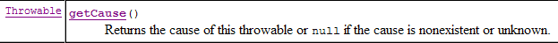
Wir erhalten das Objekt vom Typ [Throwable], das vom JDBC-Treiber ausgelöst wurde:

Der Typ [Throwable] ist die Oberklasse von [Exception].
Hier müssen wir überprüfen, ob das vom Firebird-JDBC-Treiber ausgelöste [Throwable]-Objekt – das die vom [iBATIS]-Layer ausgelöste [SQLException] verursacht hat – tatsächlich eine Ausnahme vom Typ [org.firebirdsql.gds.GDSException] mit dem Fehlercode 335544336 ist. Um den Fehlercode abzurufen, können wir die Methode [getErrorCode()] der Klasse [org.firebirdsql.gds.GDSException] verwenden.
Wenn wir die Ausnahme [org.firebirdsql.gds.GDSException] im Code von [ThreadDaoMajEnfants] verwenden, funktioniert dieser Thread nur mit dem Firebird-DBMS. Das Gleiche gilt für den Test [test4], der diesen Thread nutzt. Das wollen wir vermeiden. Tatsächlich möchten wir, dass unsere JUnit-Tests unabhängig vom verwendeten DBMS gültig bleiben. Um dies zu erreichen, beschließen wir, dass die [dao]-Schicht eine [DaoException] mit dem Code 4 auslöst, sobald eine „Update-Konflikt“-Ausnahme erkannt wird, unabhängig vom zugrunde liegenden DBMS. Somit kann der Thread [ThreadDaoMajEnfants] wie folgt umgeschrieben werden:
- Zeilen 34–36: Die Ausnahme [DaoException] mit dem Code 4 wird abgefangen. Der Thread [ThreadDaoMajEnfants] wird gezwungen, den Aktualisierungsvorgang von vorne zu beginnen (Zeile 10)
Unsere [dao]-Schicht muss daher in der Lage sein, eine „Update-Konflikt“-Ausnahme zu erkennen. Diese Ausnahme wird von einem JDBC-Treiber ausgelöst und ist spezifisch für diesen. Diese Ausnahme muss in der Methode [updatePerson] der Klasse [DaoImplCommon] behandelt werden:
Die Zeilen 7–11 müssen in einen try/catch-Block eingeschlossen werden. Für das Firebird-DBMS müssen wir überprüfen, ob die Ausnahme, die zum Fehlschlagen der Aktualisierung geführt hat, vom Typ [org.firebirdsql.gds.GDSException] ist und den Fehlercode 335544336 aufweist. Wenn wir diese Art von Test in [DaoImplCommon] einfügen, binden wir diese Klasse an das Firebird-DBMS, was natürlich unerwünscht ist. Wenn wir die Klasse [DaoImplCommon] universell einsetzbar halten wollen, müssen wir sie ableiten und die Ausnahme in einer Firebird-spezifischen Klasse behandeln. Genau das tun wir jetzt.
17.4.2. Die Klasse [DaoImplFirebird]
Ihr Code lautet wie folgt:
- Zeile 5: Die Klasse [DaoImplFirebird] leitet sich von [DaoImplCommon] ab, der Klasse, die wir gerade behandelt haben. Sie definiert in den Zeilen 8–33 die Methode [updatePersonne] neu, die uns Probleme bereitet.
- Zeile 20: Wir fangen die Spring-Ausnahme vom Typ [UncategorizedSQLException] ab
- Zeilen 21–22: Wir überprüfen, ob die zugrunde liegende Ausnahme vom Typ [SQLException], die von der [iBATIS]-Schicht ausgelöst wird, durch eine Ausnahme vom Typ [org.firebirdsql.jdbc.FBSQLException] verursacht wird
- Zeile 25: Wir überprüfen außerdem, ob der Fehlercode für diese Firebird-Ausnahme 335544336 lautet, also der Fehlercode für „Deadlock“.
- Zeilen 26–27: Wenn alle diese Bedingungen erfüllt sind, wird eine [DaoException] mit dem Code 4 ausgelöst.
- Zeilen 36–44: Die Methode [wait] hält den aktuellen Thread für N Millisekunden an. Dies ist nur für Testzwecke nützlich.
Wir sind bereit, die neue [dao]-Schicht zu testen.
17.4.3. Testen der [DaoImplFirebird]-Implementierung
Die Testkonfigurationsdatei [spring-config-test-dao-firebird.xml] wird so geändert, dass die [DaoImplFirebird]-Implementierung verwendet wird:
<?xml version="1.0" encoding="ISO_8859-1"?>
<!DOCTYPE beans SYSTEM "http://www.springframework.org/dtd/spring-beans.dtd">
<beans>
<!-- data source DBCP -->
<bean id="dataSource" class="org.apache.commons.dbcp.BasicDataSource"
destroy-method="close">
<property name="driverClassName">
<value>org.firebirdsql.jdbc.FBDriver</value>
</property>
<!-- warning: do not leave spaces between the two <value> tags -->
<property name="url">
<value>jdbc:firebirdsql:localhost/3050:C:/data/2005-2006/eclipse/dvp-eclipse-tomcat/mvc-personnes-03/database/dbpersonnes.gdb</value>
</property>
<property name="username">
<value>sysdba</value>
</property>
<property name="password">
<value>masterkey</value>
</property>
</bean>
<!-- SqlMapCllient -->
<bean id="sqlMapClient"
class="org.springframework.orm.ibatis.SqlMapClientFactoryBean">
<property name="dataSource">
<ref local="dataSource"/>
</property>
<property name="configLocation">
<value>classpath:sql-map-config-firebird.xml</value>
</property>
</bean>
<!-- the [dao] layer access classes -->
<bean id="dao" class="istia.st.mvc.personnes.dao.DaoImplFirebird">
<property name="sqlMapClient">
<ref local="sqlMapClient"/>
</property>
</bean>
</beans>
- Zeile 32: die neue Implementierung [DaoImplFirebird] der [dao]-Schicht.
Die Ergebnisse des Tests [test4], der zuvor fehlgeschlagen war, lauten wie folgt:
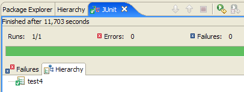
[test4] bestanden. Die letzten Zeilen der Bildschirmprotokolle lauten wie folgt:
Die letzte Zeile zeigt an, dass Thread Nr. 36 als letzter fertig wurde. Zeile 3 zeigt einen Versionskonflikt, der Thread Nr. 36 dazu zwang, seine Person-Aktualisierungsprozedur neu zu starten (Zeile 4). Andere Protokolle zeigen Zugriffskonflikte während der Aktualisierungen:
Zeile 2 zeigt, dass Thread Nr. 75 während seiner Aktualisierung aufgrund eines Aktualisierungskonflikts fehlgeschlagen ist: Als der SQL-Befehl [update] für die Tabelle [PERSONNES] ausgeführt wurde, war die zu aktualisierende Zeile von einem anderen Thread gesperrt. Dieser Zugriffskonflikt zwingt Thread Nr. 75 dazu, seine Aktualisierung erneut zu versuchen.
Zum Abschluss von [test4] stellen wir einen deutlichen Unterschied zu den Ergebnissen desselben Tests in Version 1 fest, wo dieser aufgrund von Synchronisationsproblemen fehlschlug. Da die Methoden in der [dao]-Schicht von Version 1 nicht synchronisiert waren, kam es zu Zugriffskonflikten. Hier mussten wir die [dao]-Schicht nicht synchronisieren. Wir haben lediglich die von Firebird gemeldeten Zugriffskonflikte behandelt.
Führen wir nun den gesamten JUnit-Test für die [dao]-Schicht aus:

Es scheint also, dass wir eine gültige [dao]-Schicht haben. Um sie mit hoher Sicherheit für gültig zu erklären, müssten wir weitere Tests durchführen. Dennoch betrachten wir sie als funktionsfähig.
17.5. Die [service]-Schicht
17.5.1. Die Komponenten der [service]-Schicht
Die [service]-Schicht besteht aus den folgenden Klassen und Schnittstellen:

- [IService] ist die von der [Service]-Schicht bereitgestellte Schnittstelle
- [ServiceImpl] ist eine Implementierung dieser Schnittstelle
Die [IService]-Schnittstelle sieht wie folgt aus:
- Die Schnittstelle verfügt über dieselben vier Methoden wie in Version 1, hat jedoch zwei zusätzliche:
- saveMany: Ermöglicht es Ihnen, mehrere Personen gleichzeitig auf atomare Weise zu speichern. Entweder werden alle gespeichert oder keine.
- deleteMany: Ermöglicht es Ihnen, mehrere Personen gleichzeitig auf atomare Weise zu löschen. Entweder werden alle gelöscht oder keine.
Diese beiden Methoden werden von der Webanwendung nicht verwendet. Wir haben sie hinzugefügt, um das Konzept einer Datenbanktransaktion zu veranschaulichen. Beide Methoden müssen innerhalb einer Transaktion ausgeführt werden, um die gewünschte Atomizität zu erreichen.
Die Klasse [ServiceImpl], die diese Schnittstelle implementiert, sieht wie folgt aus:
- Die Methoden [getAll, getOne, insertOne, saveOne] rufen die gleichnamigen Methoden der [dao]-Schicht auf.
- Zeilen 42–47: Die Methode [saveMany] speichert nacheinander die Personen aus dem als Parameter übergebenen Array.
- Zeilen 50–55: Die Methode [deleteMany] löscht nacheinander die Personen, deren IDs als Array-Parameter übergeben werden.
Wir haben erwähnt, dass die Methoden [saveMany] und [deleteMany] innerhalb einer Transaktion ausgeführt werden müssen, um den Alles-oder-Nichts-Charakter dieser Methoden zu gewährleisten. Wir sehen, dass der obige Code dieses Konzept der Transaktionen vollständig ignoriert. Dies wird erst in der Konfigurationsdatei der [service]-Schicht erscheinen.
17.5.2. Konfiguration der [ -Service]-Schicht
Oben, in Zeile 11, sehen wir, dass die [ServiceImpl]-Implementierung eine Referenz auf die [dao]-Schicht enthält. Diese wird, wie in Version 1, von Spring initialisiert, wenn die [service - ServiceImpl]-Schicht instanziiert wird. Die Konfigurationsdatei, die die Instanziierung der [service]-Schicht ermöglicht, sieht wie folgt aus:
<?xml version="1.0" encoding="ISO_8859-1"?>
<!DOCTYPE beans SYSTEM "http://www.springframework.org/dtd/spring-beans.dtd">
<beans>
<!-- data source DBCP -->
<bean id="dataSource" class="org.apache.commons.dbcp.BasicDataSource"
destroy-method="close">
<property name="driverClassName">
<value>org.firebirdsql.jdbc.FBDriver</value>
</property>
<property name="url">
<!-- warning: do not leave spaces between the two <value> tags -->
<value>jdbc:firebirdsql:localhost/3050:C:/data/2005-2006/eclipse/dvp-eclipse-tomcat/mvc-personnes-03/database/dbpersonnes.gdb</value>
</property>
<property name="username">
<value>sysdba</value>
</property>
<property name="password">
<value>masterkey</value>
</property>
</bean>
<!-- SqlMapCllient -->
<bean id="sqlMapClient"
class="org.springframework.orm.ibatis.SqlMapClientFactoryBean">
<property name="dataSource">
<ref local="dataSource"/>
</property>
<property name="configLocation">
<value>classpath:sql-map-config-firebird.xml</value>
</property>
</bean>
<!-- the [dao] layer access class -->
<bean id="dao" class="istia.st.mvc.personnes.dao.DaoImplFirebird">
<property name="sqlMapClient">
<ref local="sqlMapClient"/>
</property>
</bean>
<!-- transaction manager -->
<bean id="transactionManager"
class="org.springframework.jdbc.datasource.DataSourceTransactionManager">
<property name="dataSource">
<ref local="dataSource"/>
</property>
</bean>
<!-- access classes to the [service] layer -->
<bean id="service"
class="org.springframework.transaction.interceptor.TransactionProxyFactoryBean">
<property name="transactionManager">
<ref local="transactionManager"/>
</property>
<property name="target">
<bean class="istia.st.mvc.personnes.service.ServiceImpl">
<property name="dao">
<ref local="dao"/>
</property>
</bean>
</property>
<property name="transactionAttributes">
<props>
<prop key="get*">PROPAGATION_SUPPORTS,readOnly</prop>
<prop key="save*">PROPAGATION_REQUIRED</prop>
<prop key="delete*">PROPAGATION_REQUIRED</prop>
</props>
</property>
</bean>
</beans>
- Zeilen 1–36: Konfiguration der [dao]-Schicht. Diese Konfiguration wurde bei der Erläuterung der [dao]-Schicht in Abschnitt 17.3.2 erklärt.
- Zeilen 38–64: Konfiguration der [service]-Schicht
In Zeile 46 sehen wir, dass die [service]-Schicht durch den Typ [TransactionProxyFactoryBean] implementiert wird. Wir hatten erwartet, den Typ [ServiceImpl] zu finden. [TransactionProxyFactoryBean] ist ein vordefinierter Spring-Typ. Wie ist es möglich, dass ein vordefinierter Typ die für unsere Anwendung spezifische Schnittstelle [IService] implementiert?
Werfen wir zunächst einen Blick auf die Klasse [TransactionProxyFactoryBean]:

Wir sehen, dass sie die [FactoryBean]-Schnittstelle implementiert. Diese Schnittstelle ist uns bereits bekannt. Wir wissen, dass Spring, wenn eine Anwendung eine Instanz eines Typs, der [FactoryBean] implementiert, anfordert, keine [I]-Instanz dieses Typs zurückgibt, sondern das Objekt, das von der Methode [I].getObject() zurückgegeben wird:
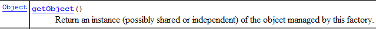
In unserem Fall wird die [Service]-Schicht durch das Objekt implementiert, das von [TransactionProxyFactoryBean].getObject() zurückgegeben wird. Was ist das für ein Objekt? Wir werden nicht ins Detail gehen, da dies sehr komplex ist. Es fällt unter das, was als Spring AOP (aspektorientierte Programmierung) bekannt ist. Wir werden versuchen, die Sachlage anhand einiger einfacher Diagramme zu verdeutlichen. AOP ermöglicht Folgendes:
- Wir haben zwei Klassen, C1 und C2, wobei C1 die von C2 bereitgestellte [I2]-Schnittstelle verwendet:
 |
- Dank AOP können wir einen Interceptor zwischen den Klassen C1 und C2 einfügen, und zwar auf eine Weise, die für beide Klassen transparent ist:
 |
Die Klasse [C1] wurde so kompiliert, dass sie mit der Schnittstelle [I2] zusammenarbeitet, die [C2] implementiert. Zur Laufzeit platziert AOP die Klasse [Interceptor] zwischen [C1] und [C2]. Damit dies möglich ist, muss die Klasse [Interceptor] natürlich gegenüber [C1] dieselbe Schnittstelle [I2] präsentieren wie [C2].
Wozu dient dies? Die Spring-Dokumentation liefert einige Beispiele. Beispielsweise möchten Sie vielleicht Aufrufe einer bestimmten Methode M von [C2] protokollieren, um diese Methode zu überprüfen. In [Interceptor] würden Sie dann eine Methode [M] schreiben, die diese Protokollierungen durchführt. Der Aufruf von [C1] an [C2].M verläuft wie folgt (siehe Diagramm oben):
- [C1] ruft die Methode M von [C2] auf. Tatsächlich wird jedoch die Methode M von [interceptor] aufgerufen. Dies ist möglich, wenn [C1] eine Schnittstelle [I2] anstelle einer bestimmten Implementierung von [I2] adressiert. Dazu muss lediglich [interceptor] [I2] implementieren.
- Die Methode M von [Interceptor] protokolliert die Informationen und ruft die Methode M von [C2] auf, die ursprünglich von [C1] angesteuert wurde.
- Die Methode M von [C2] wird ausgeführt und gibt ihr Ergebnis an die Methode M von [Interceptor] zurück, die optional etwas zu dem hinzufügen kann, was in Schritt 2 getan wurde.
- Die Methode M von [interceptor] gibt ein Ergebnis an die aufrufende Methode von [C1] zurück
Wir sehen, dass die Methode M von [Interceptor] vor und nach dem Aufruf der Methode M von [C2] etwas tun kann. Aus der Perspektive von [C1] erweitert sie somit die Methode M von [C2]. Wir können die AOP-Technologie daher als eine Möglichkeit betrachten, die von einer Klasse bereitgestellte Schnittstelle zu erweitern.
Wie lässt sich dieses Konzept auf unsere [service]-Schicht anwenden? Wenn wir die [service]-Schicht direkt mit einer [ServiceImpl]-Instanz implementieren, hat unsere Webanwendung die folgende Architektur:
 |
Wenn wir die [Service]-Schicht mit einer [TransactionProxyFactoryBean]-Instanz implementieren, ergibt sich folgende Architektur:
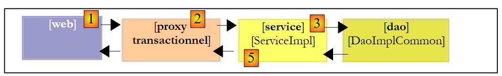 |
Man kann sagen, dass die [Service]-Schicht mit zwei Objekten instanziiert wird:
- das Objekt, das wir oben als [transactional proxy] bezeichnen, das eigentlich das von der [getObject]-Methode von [TransactionProxyFactoryBean] zurückgegebene Objekt ist. Dieses Objekt fungiert als Schnittstelle zwischen der [Service]-Schicht und der [Web]-Schicht. Es implementiert designmäßig die [IService]-Schnittstelle.
- eine [ServiceImpl]-Instanz, die ebenfalls die [IService]-Schnittstelle implementiert. Nur sie weiß, wie man mit der [dao]-Schicht arbeitet, daher ist sie notwendig.
Stellen wir uns vor, die [Web]-Schicht ruft die Methode [saveMany] der [IService]-Schnittstelle auf. Wir wissen, dass die von dieser Methode durchgeführten Einfügungen/Aktualisierungen funktional innerhalb einer Transaktion erfolgen müssen. Entweder sind alle erfolgreich, oder es wird keine ausgeführt. Wir haben die Methode [saveMany] der Klasse [ServiceImpl] vorgestellt und festgestellt, dass ihr das Konzept einer Transaktion fehlte. Die Methode [saveMany] des [transactional proxy] wird die Methode [saveMany] der Klasse [ServiceImpl] um dieses Transaktionskonzept erweitern. Folgen wir dem obigen Diagramm:
- Die [Web]-Schicht ruft die [saveMany]-Methode der [IService]-Schnittstelle auf.
- Die Methode [saveMany] von [transactional proxy] wird ausgeführt. Sie startet eine Transaktion. Dazu benötigt sie ausreichende Informationen, insbesondere ein [DataSource]-Objekt, um eine Verbindung zum DBMS herzustellen. Anschließend ruft sie die Methode [saveMany] von [ServiceImpl] auf.
- Diese Methode wird ausgeführt. Sie ruft wiederholt die [dao]-Schicht auf, um die Einfügungen oder Aktualisierungen durchzuführen. Die zu diesem Zeitpunkt ausgeführten SQL-Anweisungen werden innerhalb der in Schritt 2 gestarteten Transaktion ausgeführt.
- Angenommen, einer dieser Vorgänge schlägt fehl. Die [dao]-Schicht leitet eine Ausnahme an die [service]-Schicht weiter, genauer gesagt an die Methode [saveMany] der Instanz [ServiceImpl].
- Diese Methode führt keine Aktion aus und lässt die Ausnahme bis zur [saveMany]-Methode von [transactional proxy] weiterleiten.
- Nach Erhalt der Ausnahme führt die [saveMany]-Methode von [transactional proxy], die die Transaktion besitzt, einen [Rollback] durch, um alle Aktualisierungen rückgängig zu machen, und lässt die Ausnahme dann an die [web]-Schicht weiterleiten, die für deren Behandlung zuständig ist.
In Schritt 4 haben wir angenommen, dass einer der Einfüge- oder Aktualisierungsvorgänge fehlgeschlagen ist. Ist dies nicht der Fall, wird in [5] keine Ausnahme weitergeleitet. Dasselbe gilt für [6]. In diesem Fall führt die Methode [saveMany] von [transactional proxy] ein Commit der Transaktion durch, um alle Aktualisierungen zu validieren.
Wir haben nun ein klareres Bild von der Architektur, die durch die [TransactionProxyFactoryBean]-Bean implementiert wird. Schauen wir uns ihre Konfiguration noch einmal an:
<!-- transaction manager -->
<bean id="transactionManager"
class="org.springframework.jdbc.datasource.DataSourceTransactionManager">
<property name="dataSource">
<ref local="dataSource"/>
</property>
</bean>
<!-- access classes to the [service] layer -->
<bean id="service"
class="org.springframework.transaction.interceptor.TransactionProxyFactoryBean">
<property name="transactionManager">
<ref local="transactionManager"/>
</property>
<property name="target">
<bean class="istia.st.mvc.personnes.service.ServiceImpl">
<property name="dao">
<ref local="dao"/>
</property>
</bean>
</property>
<property name="transactionAttributes">
<props>
<prop key="get*">PROPAGATION_REQUIRED,readOnly</prop>
<prop key="save*">PROPAGATION_REQUIRED</prop>
<prop key="delete*">PROPAGATION_REQUIRED</prop>
</props>
</property>
</bean>
Betrachten wir diese Konfiguration vor dem Hintergrund der eingerichteten Architektur:
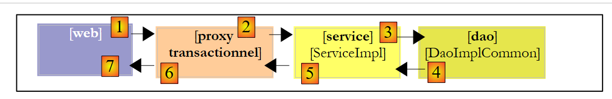 |
- [transactional proxy] verwaltet Transaktionen. Spring bietet mehrere Strategien zur Transaktionsverwaltung an. [transactional proxy] benötigt eine Referenz auf den ausgewählten Transaktionsmanager.
- Zeilen 11–13: Definieren Sie das Attribut [transactionManager] des Beans [TransactionProxyFactoryBean] mit einem Verweis auf einen Transaktionsmanager. Dieser wird in den Zeilen 2–7 definiert.
- Zeilen 2–7: Der Transaktionsmanager ist vom Typ [DataSourceTransactionManager]:

[DataSourceTransactionManager] ist ein Transaktionsmanager, der für DBMS geeignet ist, auf die über ein [DataSource]-Objekt zugegriffen wird. Er kann Transaktionen nur auf einem einzigen DBMS verwalten. Er kann keine Transaktionen verwalten, die über mehrere DBMS verteilt sind. Hier haben wir nur ein DBMS. Daher ist dieser Transaktionsmanager geeignet. Wenn der [transactional proxy] eine Transaktion startet, geschieht dies über eine Verbindung, die an den Thread angehängt ist. Diese Verbindung wird in allen Schichten verwendet, die zur Datenbank führen: [ServiceImpl, DaoImplCommon, SqlMapClientTemplate, JDBC].
Die Klasse [DataSourceTransactionManager] muss die Datenquelle kennen, von der sie eine Verbindung anfordern muss, um sie an den Thread anzuhängen. Dies ist in den Zeilen 4–6 definiert: Es handelt sich um dieselbe Datenquelle, die auch von der [dao]-Schicht verwendet wird (siehe Abschnitt 17.5.2).
- Zeilen 14–19: Das Attribut „target“ gibt die abzufangende Klasse an, in diesem Fall die Klasse [ServiceImpl]. Diese Information ist aus zwei Gründen erforderlich:
- Die Klasse [ServiceImpl] muss instanziiert werden, da sie die Kommunikation mit der [dao]-Schicht übernimmt
- [TransactionProxyFactoryBean] muss einen Proxy generieren, der der [web]-Schicht dieselbe Schnittstelle wie [ServiceImpl] präsentiert.
- Zeilen 21–27: Geben an, welche Methoden von [ServiceImpl] der Proxy abfangen muss. Das Attribut [transactionAttributes] in Zeile 21 gibt an, welche Methoden von [ServiceImpl] eine Transaktion erfordern und welche Attribute die Transaktion hat:
- Zeile 23: Methoden, deren Namen mit „get“ beginnen [getOne, getAll], werden innerhalb einer Transaktion mit den Attributen [PROPAGATION_REQUIRED, readOnly] ausgeführt:
- PROPAGATION_REQUIRED: Die Methode wird in einer Transaktion ausgeführt, sofern bereits eine an den Thread angehängt ist; andernfalls wird eine neue erstellt und die Methode läuft darin ab.
- readOnly: schreibgeschützte Transaktion
Hier werden die Methoden [getOne] und [getAll] von [ServiceImpl] innerhalb einer Transaktion ausgeführt, obwohl dies eigentlich nicht notwendig ist. Jeder Vorgang besteht aus einer einzigen SELECT-Anweisung. Wir sehen keinen Sinn darin, diese SELECT-Anweisung in eine Transaktion einzubinden.
- Zeile 24: Methoden, deren Namen mit „save“ beginnen – [saveOne] und [saveMany] – werden innerhalb einer Transaktion mit dem Attribut [PROPAGATION_REQUIRED] ausgeführt.
- Zeile 25: Die Methoden [deleteOne] und [deleteMany] von [ServiceImpl] sind identisch mit den Methoden [saveOne] und [saveMany] konfiguriert.
In unserer [service]-Schicht müssen nur die Methoden [saveMany] und [deleteMany] innerhalb einer Transaktion ausgeführt werden. Die Konfiguration hätte auf die folgenden Zeilen reduziert werden können:
<property name="transactionAttributes">
<props>
<prop key="saveMany">PROPAGATION_REQUIRED</prop>
<prop key="deleteMany">PROPAGATION_REQUIRED</prop>
</props>
</property>
17.6. Testen der [service]-Schicht
Nachdem wir nun die [service]-Schicht geschrieben und konfiguriert haben, werden wir sie mit JUnit-Tests testen:

Die Konfigurationsdatei der [Service]-Schicht [spring-config-test-service-firebird.xml] ist die in Abschnitt 17.5.2 beschriebene.
Der JUnit-Test [TestServiceFirebird] sieht wie folgt aus:
1 2 3 4 5 6 7 8 9 10 11 12 13 14 15 16 17 18 19 20 21 22 23 24 25 26 27 28 29 30 31 32 33 34 35 36 37 38 39 40 41 42 43 44 45 46 47 48 49 50 51 52 53 54 55 56 57 58 59 60 61 62 63 64 65 66 67 68 69 70 71 72 73 74 75 76 77 78 79 80 81 82 83 84 85 86 87 88 89 90 91 92 93 94 95 96 97 98 99 100 101 102 103 104 105 106 107 108 109 110 111 112 113 114 115 116 117 118 119 120 121 122 123 124 125 126 127 128 129 130 131 132 133 134 135 136 137 138 139 140 141 142 143 144 145 146 147 148 149 150 151 152 153 154 155 156 157 | |
- Zeilen 19–22: Das Programm testet die [dao]- und [service]-Schichten, die durch die Datei [spring-config-test-service-firebird.xml] konfiguriert wurden, die im vorherigen Abschnitt behandelt wurde.
- Die Tests [test1] bis [test6] sind konzeptionell identisch mit ihren gleichnamigen Pendants in der Testklasse [TestDaoFirebird] der [dao]-Schicht. Der einzige Unterschied besteht darin, dass die Methoden [saveOne] und [deleteOne] aufgrund der Konfiguration nun innerhalb einer Transaktion ausgeführt werden.
- Der Zweck der Methode [test7] besteht darin, die Methoden [saveMany] und [deleteMany] zu testen. Wir wollen überprüfen, ob sie tatsächlich innerhalb einer Transaktion ausgeführt werden. Sehen wir uns den Code für diese Methode an:
- Zeilen 62–63: Wir zählen die Anzahl der Personen [nbPersonnes1], die sich derzeit in der Liste befinden
- Zeilen 67–72: Wir erstellen drei Personen
- Zeilen 73–83: Diese drei Personen werden mit der Methode [saveMany] gespeichert – Zeile 77. Die ersten beiden Personen, p1 und p2, mit der ID -1 werden zur Tabelle [PERSONNES] hinzugefügt. Person p3 hat eine ID von -2. Es handelt sich also nicht um einen Eintrag, sondern um eine Aktualisierung. Diese Aktualisierung schlägt fehl, da es in der Tabelle [PERSONS] keine Person mit der ID -2 gibt. Die [dao]-Schicht löst daher eine Ausnahme aus, die bis zur [service]-Schicht weitergeleitet wird. Das Vorliegen dieser Ausnahme wird in Zeile 83 überprüft.
- Aufgrund der vorherigen Ausnahme sollte die [service]-Schicht alle SQL-Anweisungen zurückrollen, die während der Ausführung der [saveMany]-Methode ausgegeben wurden, da diese Methode innerhalb einer Transaktion läuft. Zeilen 86–87: Wir überprüfen, ob sich die Anzahl der Personen in der Liste nicht geändert hat, was bedeutet, dass die Einfügungen von p1 und p2 nicht stattgefunden haben.
- Zeilen 88–103: Wir fügen nur p1 und p2 hinzu und überprüfen, ob sich nun zwei weitere Personen in der Liste befinden.
- Zeilen 106–114: Wir löschen eine Gruppe von Personen, bestehend aus den soeben hinzugefügten Personen p1 und p2 sowie einer nicht existierenden Person (id = -1). Dazu wird die Methode [deleteMany] verwendet (Zeile 108). Diese Methode schlägt fehl, da es in der Tabelle [PERSONNES] keine Person mit der ID –1 gibt. Die [dao]-Schicht löst daher eine Ausnahme aus, die bis zur [service]-Schicht weitergeleitet wird. Das Vorliegen dieser Ausnahme wird in Zeile 114 überprüft.
- Aufgrund der vorherigen Ausnahme sollte die [service]-Schicht ein [Rollback] aller SQL-Anweisungen durchführen, die während der Ausführung der [deleteMany]-Methode ausgegeben wurden, da diese Methode innerhalb einer Transaktion ausgeführt wird. Zeilen 116–117: Wir überprüfen, ob sich die Anzahl der Personen in der Liste nicht geändert hat und dass daher die Löschungen von p1 und p2 nicht stattgefunden haben.
- Zeile 122: Wir löschen eine Gruppe, die ausschließlich aus den Personen p1 und p2 besteht. Dies sollte gelingen. Der Rest der Methode überprüft, ob dies tatsächlich der Fall ist.
Die Ausführung der Tests liefert folgende Ergebnisse:

Alle sieben Tests waren erfolgreich. Wir betrachten unsere [Service]-Schicht als betriebsbereit.
17.7. Die [w eb]-Schicht
Sehen wir uns die allgemeine Architektur der zu erstellenden Webanwendung an:
 |
Wir haben gerade die [dao]- und [service]-Schichten für die Arbeit mit einer Firebird-Datenbank erstellt. Wir haben eine Version 1 dieser Anwendung geschrieben, in der die [dao]- und [service]-Schichten mit einer Liste von Personen im Arbeitsspeicher arbeiteten. Die damals geschriebene [Web]-Schicht bleibt gültig. Tatsächlich interagierte sie mit einer [Service]-Schicht, die die [IService]-Schnittstelle implementierte. Da die neue [Service]-Schicht dieselbe Schnittstelle implementiert, muss die [Web]-Schicht nicht geändert werden.
Im vorherigen Artikel wurde Version 1 der Anwendung mit dem Eclipse-Projekt [mvc-personnes-02B] getestet, bei dem die [Web-, Service-, DAO- und Entity-]Schichten in .jar-Dateien gepackt waren:
 |
Der Ordner [src] war leer. Die Klassen der Schichten befanden sich in den Archiven [people-*.jar]:
 |
Um Version 2 zu testen, duplizieren wir in Eclipse den Ordner [mvc-personnes-02B] in [mvc-personnes-03B] (Kopieren/Einfügen):

Im Projekt [mvc-personnes-03] exportieren wir über [Datei / Exportieren / JAR-Datei] die Schichten [DAO] und [Service] jeweils in die Archive [personnes-dao.jar] und [personnes-service.jar] im Ordner [dist] des Projekts:
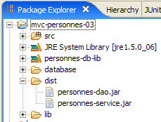
Wir kopieren diese beiden Dateien und fügen sie dann in Eclipse in den Ordner [WEB-INF/lib] des Projekts [mvc-personnes-03B] ein, wo sie die gleichnamigen Dateien der vorherigen Version ersetzen.
 |
Außerdem kopieren und fügen wir die Archive [commons-dbcp-*.jar, commons-pool-*.jar, firebirdsql-full.jar, ibatis-common-2.jar, ibatis-sqlmap-2.jar] aus dem Ordner [lib] des Projekts [mvc-personnes-03] in den Ordner [WEB-INF/lib] des Projekts [mvc-personnes-03B] kopieren und dort einfügen. Diese JAR-Dateien werden für die neuen Schichten [dao] und [service] benötigt.
Anschließend fügen wir die neuen JAR-Dateien in den Klassenpfad des Projekts ein: [Rechtsklick auf das Projekt -> Eigenschaften -> Java-Build-Pfad -> JARs hinzufügen].
Der Ordner [src] enthält die Konfigurationsdateien für die Schichten [dao] und [service]:
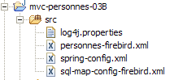
Die Datei [spring-config.xml] konfiguriert die [dao]- und [service]-Schichten der Webanwendung. In der neuen Version ist sie identisch mit der Datei [spring-config-test-service-firebird.xml], die zur Konfiguration des Service-Schicht-Tests im Projekt [mvc-personnes-03] verwendet wird. Wir kopieren daher den Inhalt von einer Datei in die andere:
<?xml version="1.0" encoding="ISO_8859-1"?>
<!DOCTYPE beans SYSTEM "http://www.springframework.org/dtd/spring-beans.dtd">
<beans>
<!-- data source DBCP -->
<bean id="dataSource" class="org.apache.commons.dbcp.BasicDataSource"
destroy-method="close">
<property name="driverClassName">
<value>org.firebirdsql.jdbc.FBDriver</value>
</property>
<property name="url">
<!-- warning: do not leave spaces between the two <value> tags -->
<value>jdbc:firebirdsql:localhost/3050:C:/data/2005-2006/eclipse/dvp-eclipse-tomcat/mvc-personnes-03/database/dbpersonnes.gdb</value>
</property>
<property name="username">
<value>sysdba</value>
</property>
<property name="password">
<value>masterkey</value>
</property>
</bean>
<!-- SqlMapCllient -->
<bean id="sqlMapClient"
class="org.springframework.orm.ibatis.SqlMapClientFactoryBean">
<property name="dataSource">
<ref local="dataSource"/>
</property>
<property name="configLocation">
<value>classpath:sql-map-config-firebird.xml</value>
</property>
</bean>
<!-- the [dao] layer access class -->
<bean id="dao" class="istia.st.mvc.personnes.dao.DaoImplFirebird">
<property name="sqlMapClient">
<ref local="sqlMapClient"/>
</property>
</bean>
<!-- transaction manager -->
<bean id="transactionManager"
class="org.springframework.jdbc.datasource.DataSourceTransactionManager">
<property name="dataSource">
<ref local="dataSource"/>
</property>
</bean>
<!-- access classes to the [service] layer -->
<bean id="service"
class="org.springframework.transaction.interceptor.TransactionProxyFactoryBean">
<property name="transactionManager">
<ref local="transactionManager"/>
</property>
<property name="target">
<bean class="istia.st.mvc.personnes.service.ServiceImpl">
<property name="dao">
<ref local="dao"/>
</property>
</bean>
</property>
<property name="transactionAttributes">
<props>
<prop key="get*">PROPAGATION_SUPPORTS,readOnly</prop>
<prop key="save*">PROPAGATION_REQUIRED</prop>
<prop key="delete*">PROPAGATION_REQUIRED</prop>
</props>
</property>
</bean>
</beans>
- Zeile 12: Die URL der Firebird-Datenbank. Wir verwenden weiterhin die Datenbank, die zum Testen der [dao]- und [service]-Schichten verwendet wurde
Wir stellen das Webprojekt [mvc-personnes-03B] in Tomcat bereit:
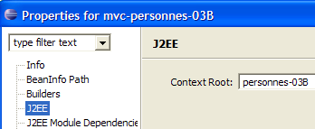 |  |
Wir sind bereit für die Test- . Das Firebird-DBMS läuft. Der Inhalt der Tabelle [PERSONNES] sieht wie folgt aus:

Anschließend wird Tomcat gestartet. Über einen Browser rufen wir die URL [http://localhost:8080/mvc-personnes-03B] auf:

Wir fügen über den Link [Hinzufügen] eine neue Person hinzu:
 |  |
Wir überprüfen den Eintrag in der Datenbank:

Der Leser ist eingeladen, weitere Tests durchzuführen [Bearbeiten, Löschen].
Führen wir nun den in Version 1 durchgeführten Versionskonflikttest durch. [Firefox] ist der Browser von Benutzer U1. Benutzer U1 fordert die URL [http://localhost:8080/mvc-personnes-03B] an:

[IE] ist der Browser von Benutzer U2. Benutzer U2 fordert dieselbe URL an:
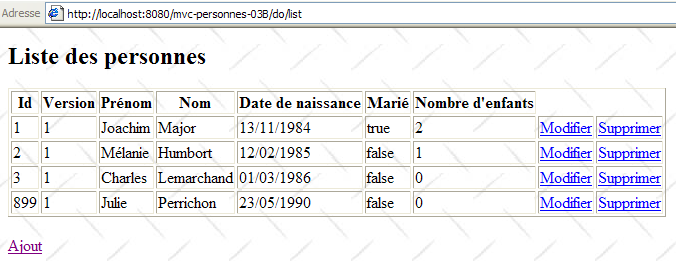
Benutzer U1 gibt die Personendaten [Perrichon] ein:
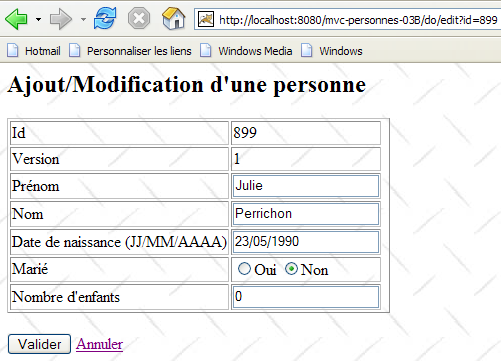
Benutzer U2 macht dasselbe:

Benutzer U1 nimmt Änderungen vor und sendet das Formular ab:
 |
Benutzer U2 macht dasselbe:
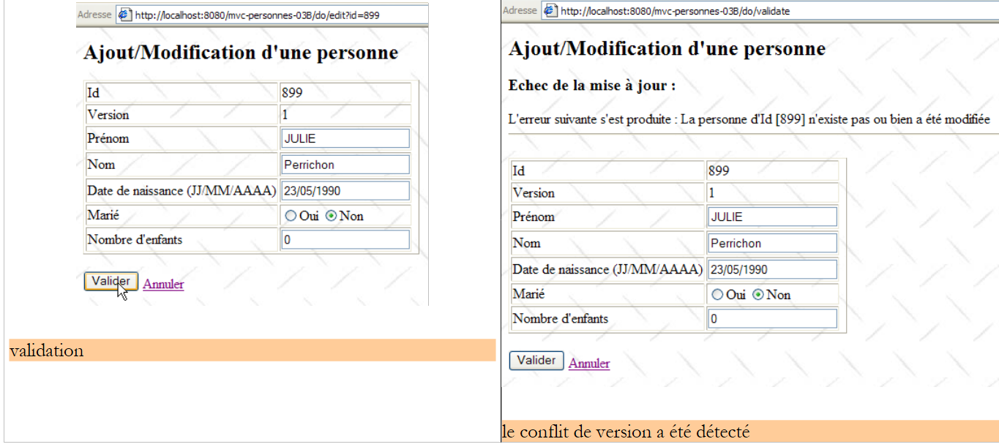 |
Benutzer U2 kehrt über den Link [Abbrechen] im Formular zur Liste der Personen zurück:

Er findet die Person [Perrichon] in der von U1 geänderten Form (Name großgeschrieben).
Und wie sieht es mit der Datenbank aus? Schauen wir mal:

Der Name von Person Nr. 899 ist nach der von U1 vorgenommenen Änderung tatsächlich großgeschrieben.
17.8. Fazit
Fassen wir zusammen, was wir erreichen wollten. Wir hatten eine Webanwendung mit der folgenden dreischichtigen Architektur:
wobei die [dao]- und [service]-Schichten mit einer In-Memory-Datenliste arbeiteten, die beim Herunterfahren des Webservers verloren ging. Das war Version 1. In Version 2 wurden die [service]- und [dao]-Schichten so umgeschrieben, dass die Liste der Personen in einer Datenbanktabelle gespeichert wird. Sie ist nun persistent. Wir schlagen nun vor, die Auswirkungen zu untersuchen, die ein Wechsel des DBMS auf unsere Anwendung hat. Dazu werden wir drei neue Versionen unserer Webanwendung erstellen:
 |
- Version 3: Das DBMS ist Postgres
- Version 4: Das DBMS ist MySQL
- Version 5: Das DBMS ist SQL Server Express 2005
Änderungen werden an folgenden Stellen vorgenommen:
- Die Klasse [DaoImplFirebird] implementiert die [dao]-Schichtfunktionalität für das Firebird-DBMS. Wenn diese Anforderung bestehen bleibt, wird sie durch die Klassen [DaoImplPostgres], [DaoImplMySQL] bzw. [DaoImplSqlExpress] ersetzt.
- Die iBATIS-Mapping-Datei [personnes-firebird.xml] für das Firebird-DBMS wird durch die Mapping-Dateien [personnes-postgres.xml], [personnes-mysql.xml] bzw. [personnes-sqlexpress.xml] ersetzt.
- Die Konfiguration des [DataSource]-Objekts in der [dao]-Schicht ist DBMS-spezifisch. Sie ändert sich daher mit jeder Version.
- Auch der JDBC-Treiber des DBMS ändert sich mit jeder Version
Abgesehen von diesen Punkten bleibt alles andere unverändert. In den folgenden Abschnitten beschreiben wir diese neuen Versionen und konzentrieren uns dabei ausschließlich auf die jeweils neu eingeführten Funktionen.